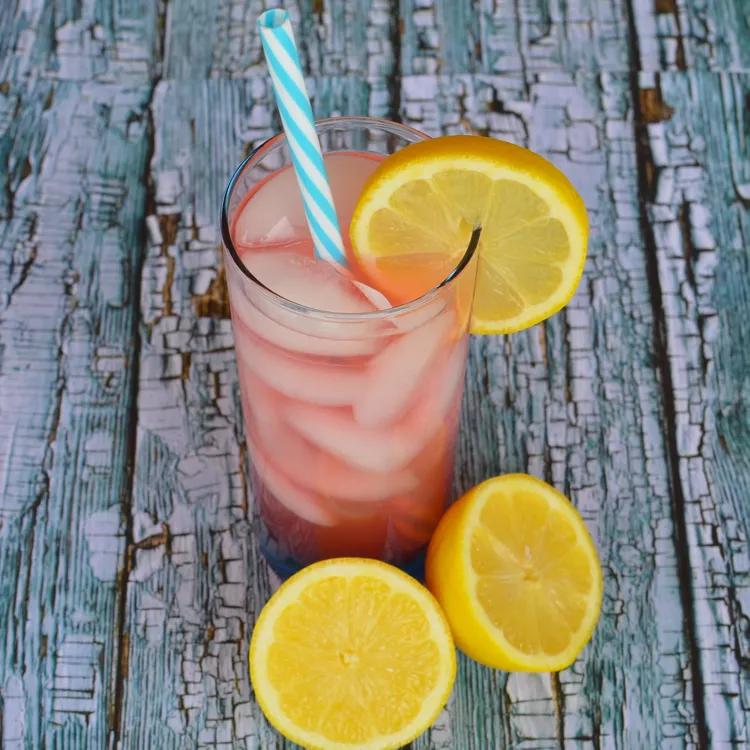

Old-Fashioned Pink Lemonade

Description
This gorgeous pink lemonade recipe is the perfect way to cool down on a hot summer day.
Serve the pink lemonade over ice and garnish each glass with a lemon slice or wedge for an extra pop of color.
Ingredients
- 9 cups water
- 2 cups white sugar
- 2 cups fresh lemon juice
- 1 cup cranberry juice, chilled
- ice as needed
Steps
- Combine water, sugar, lemon juice, and cranberry juice in a large pitcher; stir until sugar dissolves.
- Serve in tall glasses over ice.